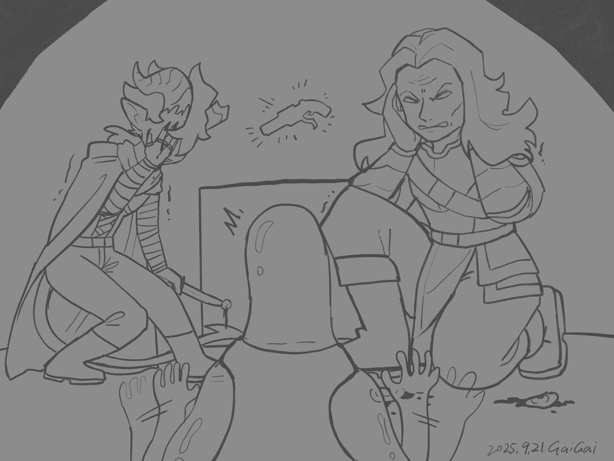

Chapter 3: The Heartless Trial
Seats of the Eclipse

Seats of the Eclipse
15051.10.17
眼看 Lott 一直醒不來，冒險者們決定先離開靈魂議會，保持體力，以面對明天中午的試煉。
Buzz 帶著三人來到他之前居住在不動席的宿舍，四人一同來到一間單人房。在舍監簡單確認 Lott 的狀況穩定後，依然昏睡的 Lott 在 Buzz 的床上躺著。Buzz 注意到 Ubbo 是月神教的信徒，和他詢問了一些相關的問題，以及和妖精王國有關的事，但他也注意到 Ubbo 很多都不清楚，讓 Buzz 稍微放心。
Psyber 祈禱，試圖和 Nessis 溝通，來詢問明天試煉的可能內容，卻意外聽見了一個沒聽過的聲音，對著他笑道「你也會參與其中喔！」。
15051.10.18
大家睡飽後醒來了，連 Lott 也清醒了。
接近中午時間，大家抵達了靈魂議會。從不動席的門走入，冒險者們看見了高塔的正中間有個流體狀的高聳柱體。Ubbo 感到好奇，把手伸進去，發現這個流體有一股將他往上抬昇的感覺。他決定整個人埋進去，流體穩穩地將他向上送。其他冒險者雖然覺得有點古怪，但還是跟著上去了。
流體將冒險者們送到了一個昏暗的空間，偌大的平台，周圍是如競技場的觀眾席，但空無一人。平台上，有一小群人，以及站在遠處的幾個議會成員。
正午時分，衰竭席粗重的喘息聲傳到每個人的耳中。除了 Ubbo 外，另外一名挑戰者也來到了舞台中央，那是一名全身潔白的衛兵機器人，而他身邊還跟著兩名夥伴，對他投以充滿崇拜的眼神。衰竭席宣告三名挑戰者只有兩席來到，準備宣布試煉開始。這時，一個熟悉的身影從輸送的流體快速跳出，氣喘吁吁地表明自己遲到了。是 Tam。
冒險者們對於 Tam 的現身有些驚訝，但這終歸是一場試煉，Tam 也說過誰都有資格參與，也就不奇怪了。
衰竭席請挑戰者們依序選擇兩名夥伴作為他們試煉時的支援者，也發現現場除了挑戰者外，只有冒險者三名與機器人的兩名夥伴，因此他叫喚了一名議會指派的人員，男性貓人 Ja’Riq，作為可以選擇的支援者。
Ubbo 先選擇了 Psyber，Tam 選擇了官方指派的 Ja’Riq，機器人 Lumio 則選擇了他的夥伴之一的女性蛇人 Tzar。第二輪，Lumio 選了另一名夥伴，男性獸人 Jova，Tam 選了 Buzz，而最後 Ubbo 則選了 Lott。
衰竭席將一顆魔法球抬到舞台中間，請大家觸碰這顆球，來將自己投射到試煉的空間。瞬間，冒險者們看見一片青翠的草地，四周有六個建築物，分別是屬於六個席次代表的眼、耳、鼻、舌、四肢，與心。
挑戰者們頭上各自浮現了 10 個標示，依照衰竭席的說明，這是他們的心臟移除進度。唯有將標示全數移除，才能進入最終的場地「心之席」。而心之席只能容納兩名挑戰者，因此勢必會有一名挑戰者無法晉級。支援者們各自得到了一個屬於自己的特殊能力，可以操弄自己的挑戰者或其他挑戰者的心臟指示物。衰竭席繼續說明，每一輪，挑戰者可以選擇挑戰一個不同的席次，但不能挑戰已經挑戰過的，也不能挑戰同時有人在裡面的席次。每挑戰成功一個席次，即可移除一個指示物。
試煉開始，Ubbo 方選擇先進入幻音席。支援者被指示，要各聽兩段月神的神諭，判斷哪一句為真，哪一句為否。「議會所言，皆為聖旨」、「月神慈悲，大地光輝」，Lott 成功判斷後者為真；「日與月，一體，兩面」、「芬尼爾奪走的，必將償還」，Psyber 成功判斷前者為真。大門打開，Ubbo 頭上的指示物少了一個。
冒險者們看見三名挑戰者都成功拔掉了一個指示物。第二個試煉，Ubbo 選擇曲影席。兩名支援者各自被分配到了一個迷宮，以虛像顯現在他們的眼前。曲影席告知他們，挑戰者被分配到的地圖會和其中一名支援者的相同，但挑戰者看不見這個地圖。支援者們必須分別給挑戰者一個方向（上、下、左或右），指引挑戰者正確走出迷宮。透過傳訊術，Lott 和 Psyber 確認了戰術，也在過程中確定了 Ubbo 走的是 Lott 的地圖。在 Lott 和 Psyber 的合作下，Ubbo 成功走出地圖，又拔掉了一個指示物。
冒險者們發現三名挑戰者頭上的指示物數量不一樣了。肯定是有人動了手腳。這時，傳來了衰竭席的聲音。他表示新增一條規則：支援者可以選擇自己身體未受傷的眼、耳、鼻、舌、四肢其中一個（雙眼各算一個，以此類推）主動犧牲，拔除其挑戰者的兩個指示物。
Ubbo 決定了進入死寂席。長桌上有 10 個杯子，杯子內都是透明如水的液體。死寂席的聲音傳出，10 個杯子中，只有一個杯子內的液體沒有毒。支援者可以每個杯子嘗試一次，感受是否有毒。最終，他們必須給予挑戰者一個結論，讓挑戰者正確喝下沒有毒的液體。Lott 與 Psyber 個別嘗試，判斷了有六個杯子內的液體他們的都認為是沒有毒的。他們嘗試用其他方法，如視覺、直覺等，最終找出了兩個杯子最有可能是沒有毒的。Ubbo 從兩個杯子以直覺挑了一杯喝下。門打開，Ubbo 頭上的指示物少了一個。
三名挑戰者的指示物數量差距越來越大，Lumio 越來越接近勝利，Tam 的指示物數量則遲遲不下降。
Ubbo 踏入了第四個區域，衰竭席。Ubbo 聞到了一股噁心的臭味，遲遲不散去。衰竭席告知他，兩名支援者各會聞到兩種不同的味道，他在一段時間後會聞到其中一種味道，需要正確猜出是哪一種味道，猜錯的話，被猜到的支援者鼻子會被砸爛。Lott 聞到了花香，Psyber 則聞到了海水的味道。Lott 透過傳訊術，告知 Ubbo 他聞到的味道。Ubbo 也成功判斷自己聞到的味道是花香，與 Lott 的一致。大門再度打開，Ubbo 頭上的指示物又少了一個。
走出衰竭席，Psyber 嘗試用他的特殊能力，增加另外兩名挑戰者的心臟指示物。但他發現只有 Tam 頭上的指示物被增加，Lumio 則沒有。冒險者們看見 Lumio 的兩名支援者互相擁抱，並將對方的耳朵割下，瞬間，Lumio 頭上的指示物清空。只剩下 Tam 和 Ubbo 爭取最後一席了。
Ubbo 帶著支援者們走入不動席。桌子上有一把魔法槍。不動席告訴他們，這把魔法槍裡面有十發子彈，其中只有一發是啞彈。前八發，要挑戰者分別打在支援者的四肢，第九發打在挑戰者的心臟，最後一發則可以不用擊出。Lott 和 Psyber 討論，挑戰成功的機率極低，就算挑戰成功，也只能移除一個指示物，還會剩下五個指示物，這樣還需要透過特殊能力和犧牲幾個身體部位，才能移除足夠多的指示物。同時，挑戰者們的四肢也會被打傷，這樣倒不如先犧牲自己的身體部位，讓 Ubbo 晉級。
Lott 主動提議自己願意犧牲一顆眼睛，詢問 Psyber 的意見。Psyber 也決定犧牲自己的兩個耳朵，來幫助 Ubbo。Lott 透過法術，將 Psyber 的雙耳凍住，讓 Ubbo 拿匕首將 Psyber 的雙耳割下。Lott 則自己拿出匕首，大力刺向左眼。
不動席的建築崩塌，Ubbo 頭上的指示物歸零。
Ubbo 與 Lumio，心空席的最終試煉，即將登場。